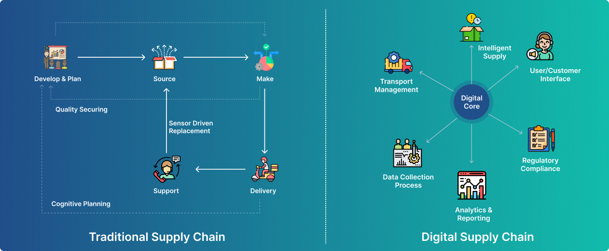

The Role of Technology in Logistics: How Digitalization is Revolutionizing
Healthcare Delivery
By EHR Logics|03/04/2023
Effective healthcare logistics is critical for ensuring that patients receive
the
care
they need in a timely and cost-effective manner. By optimizing supply chain
management,
distribution and transportation, inventory management, emergency response,
reverse
logistics, and leveraging technology, healthcare organizations can improve
patient
outcomes, reduce costs, and ensure a more sustainable healthcare system. This is
where
technology is playing a key role in revolutionizing the logistics and supply
chain
management in the healthcare industry.
Effective healthcare logistics is critical for ensuring that patients receive
the care they need in a timely and cost-effective manner. By optimizing supply
chain management, distribution and transportation, inventory management,
emergency response, reverse logistics, and leveraging technology, healthcare
organizations can improve patient outcomes, reduce costs, and ensure a more
sustainable healthcare system. This is where technology is playing a key role in
revolutionizing the logistics and supply chain management in the healthcare
industry.

Digitalization of logistics has enabled healthcare providers to optimize
their operations and improve the delivery of patient care. From
automating inventory management to using artificial intelligence (AI)
for predictive analysis, technology has transformed the way healthcare
logistics is managed.
One of the key benefits of digitalization in healthcare logistics is the
optimization of inventory management. With the help of automated
inventory systems, healthcare providers can track the availability of
medical supplies and equipment in real-time. This enables them to manage
their inventory more effectively, reduce waste, and ensure that they
always have the necessary supplies on hand to meet patient needs.
You may also like this
We provide the special tips and advice’s of heath care treatment and high
TechnicalBy EHR Logics|25/02/2023
EHR Standards: Bridging the Gap between Healthcare Systems for Better
Interoperability
Electronic health records (EHRs) have become an essential component of healthcare
delivery in recent years. EHRs allow healthcare providers to access and share
patient information in real-time, enabling more efficient and coordinated care.
An Electronic Health Record (EHR) is a digital version of a patient's medical
record, which includes their medical history, diagnoses, medications, test
results, and other health-related information. EHRs are becoming increasingly
popular as they provide an efficient and secure way to store, manage, and share
patient health information between healthcare providers.
Effective supply chain management requires careful planning, coordination, and
communication between all parties involved in the supply chain. This includes
manufacturers, distributors, healthcare providers, and patients. By streamlining
the supply chain, healthcare providers can ensure that they have the resources
they need to provide quality care, while reducing waste, cost, and inefficiency.